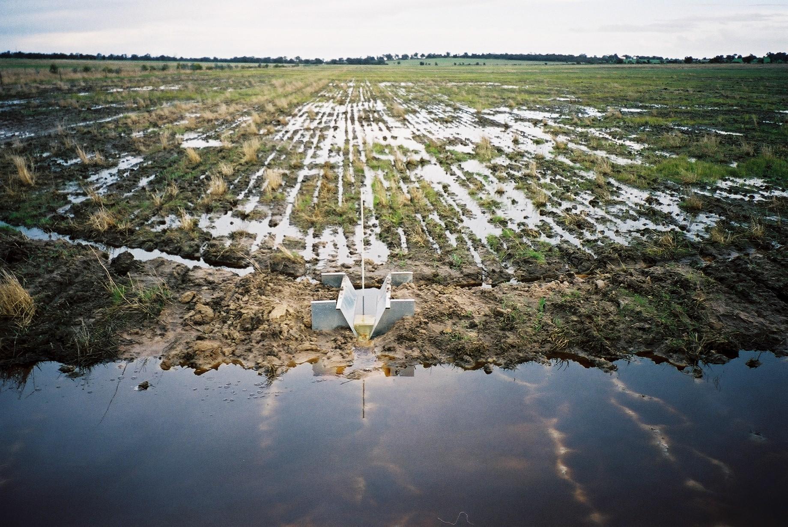

Land degradation
degradation due to water-logging
Land degradation—the deterioration or loss of the productive capacity of the soils for present and future—is a global challenge that affects everyone through food insecurity, higher food prices, climate change, environmental hazards, and the loss of biodiversity and ecosystem services. Waterlogging restricts aeration and gas exchange and thus causes a shut down in many ecosystem functions of soil. Respiration and plant growth are reduced and the plant may die if the waterlogging persists. Vegetation will change over time as plants tolerant to waterlogging gain an advantage
degradation due to Overgrazing
Overgrazing can reduce ground cover, enabling erosion and compaction of the land by wind and rain.. This reduces the ability for plants to grow and water to penetrate, which harms soil microbes and results in serious erosion of the land
degradation due to deforestation
Deforestation and forest degradation are responsible for around 15% of all greenhouse gas emissions. These greenhouse gas emissions contribute to rising temperatures, changes in patterns of weather and water, and an increased frequency of extreme weather events.